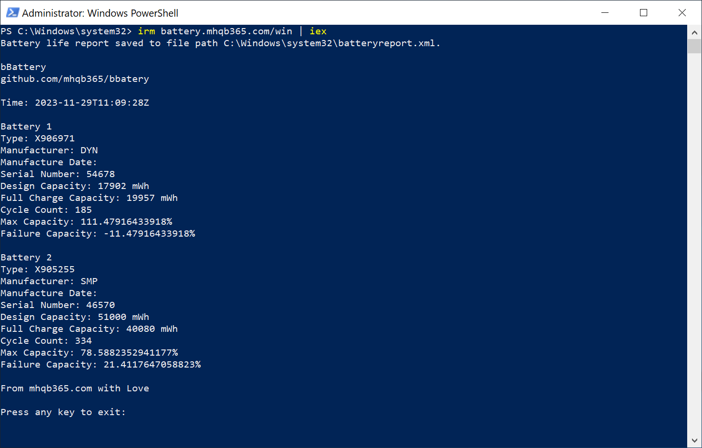

bBattery
Cách đơn giản để kiểm tra tình trạng pin của Laptop 😍
Thay vì các bạn phải tạo file report bằng powercfg ở cmd, rồi mở file report ra xem, sau đó tính toán độ chai pin thủ công thì công cụ này sẽ đơn giản hóa công việc đó chỉ với 1 dòng lệnh 😘
Windows 8, 10 & 11:
👉 Copy dòng lệnh irm dưới đây rồi paste vào PowerShell
hoặc Terminal sau đó Enter và xem kết quả
irm battery.mhqb365.com/win | iex

👉 Không thích run irm thì tải file
bBattery.ps1 về rồi click chuột phải vào
file bBattery.ps1 và chọn Run with PowerShell

👉 Vẫn ngại tải file ở đây thì vào
github.com/mhqb365/bbattery
xem mã nguồn file bBattery.ps1 rồi tải về và Run with
PowerShell
MacOS:
Đang phát triển
Linux:
Đang phát triển